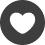

story
1999

1999年、神奈川県生まれ。 母親の影響で小さな頃からものづくりが好きで、家では裁縫をよくしていました。
2016
高校2年生の時、洋服、雑誌に影響を受け、 雑誌の編集に関わる仕事に興味を持ち始めました。
2019
大学に入学後、「エディター養成プログラム」を受講し、 雑誌作成をし雑誌編集のノウハウを学びました。
2021
コロナ禍、思い通りの就職活動ができず、カフェのアルバイト継続を決意。 アルバイト先では販売促進のための制作物を作成していました。
2023
1年後、福祉団体に就職。 渉外部として団体の基礎となる寄付金を募る活動、販促物の制作を行っていました。
2025
福祉団体で2年間勤務し、自分の興味や考えを見つめ直し、転職活動を行いました。 これからのキャリアをイメージした時に、デザインをやりたい気持ちに再度気づき、デザインを学び、仕事にすることを決意しました。